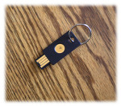
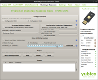

The YubiKey NEO
The YubiKey line of hardware one-time-password (OTP) generators has been on the market for a few years now—in 2010, we looked at the earlier generation of devices when support for them came to Fedora. But since that time, several updates to both the hardware and the software side of YubiKey products have been rolled out, offering users some additional choices for affordable security tokens.
For those unfamiliar with the product line in question, the YubiKey is a diminutive USB-A key-fob that houses a secure cryptographic module on the inside and a simple touch button on the outside. The basic model is flat enough that it does resemble a key more than a traditional USB thumb drive, and the company even makes a compact version (the "Nano") that barely sticks out beyond the USB port. Storage space on the key is read-protected and physically tamper-proof; the user loads a secret key into one of the available storage slots, and although the slot can be overwritten, the stored secret cannot be extracted. When the key is plugged into a USB port and the button pressed, the key computes a hash (or other relevant function) based on the secret and emits the result for use as a OTP.

What makes the YubiKey popular is its flexibility. Despite the special circuitry under the hood, when it is plugged in, the key presents itself to the host computer as a standard USB keyboard—the passwords it emits are sent as character strings, so they can be fed just as easily into an application, a system login screen, or a web site, regardless of the operating system. In addition, the storage slots can be configured in several different ways.
One of the most popular options (based on blog entries and reviews) is RFC 4226, better known as the HMAC-based One-time Password (HOTP) algorithm from the OATH open authentication standard. HOTP is a popular choice for multi-factor authentication schemes for web services, although the more popular services seem to support the Time-based One-Time Password (TOTP) variant, which adds another smidge of security by computing the HMAC hash of the current timestamp rather than a simple counter.
The YubiKey itself does not do TOTP (it does not have an onboard clock), but many users will be familiar with TOTP as the algorithm used by Google Authenticator, FreeOTP, and the like. The YubiKey's limitation to HOTP is not a trivial matter; users wishing to secure their accounts on public web services usually have no choice as to whether the service supports HOTP or TOTP. Since most of the big-name services seem to prefer TOTP, users of those services may feel frustrated that their key is less useful than they had hoped.
But, fortunately, there are configuration options available other than HOTP. Some of them, in combination with other utilities, promise to extend the YubiKey's functionality in interesting ways.
Updates
In addition to the aforementioned YubiKey Nano, the company has introduced another model with different characteristics than the original YubiKey: the YubiKey NEO, which adds a Near-Field Communication (NFC) interface and a Common Criteria–certified JavaCard secure element. The NFC mode can serve as a generic MIFARE Classic RFID token, and the JavaCard element can be loaded with any of several security applets and used like a smartcard.
These additions greatly expand the number and type of services with which the key can be used. The older YubiKey models supported two configuration slots that could be loaded with separate credentials—one slot being triggered by a quick tap on the device's button, the second being triggered by a long tap. But two sets of credentials is not that many in the SaaS era; with several accounts to protect, does one choose favorite services, or buy multiple YubiKeys?
On the company's discussion forum, buyers have periodically asked whether it would be possible to support more than two slots on the key, and the company's response suggests that there is sufficient storage space on the keys, but that the UI challenge is considerable. A short press and a long press can be reasonably distinguished, but 10 or 12 different button-press lengths would no doubt be difficult. The NEO, perhaps, is an answer to this longstanding customer wish, making use of more of the device's storage capacity.

The other changes rolled out since our previous look at the YubiKey occurred on the software front. The company is now hosting an array of free-software tools, from a pair of key-configuration utilities (one command-line tool and one Qt-powered graphical offering) to an assortment of libraries for adding YubiKey authentication to popular web frameworks.
The graphical configuration tool lets the user load either of the two programmable storage slots on a key, erase the existing configuration(s), and set a few important options (such as the character rate at which the device emits password key codes and protecting the key's configuration by setting a passcode). Currently there are four configuration options for the data slots: the HOTP mode mentioned earlier, a static password, a challenge-response mode, and a special OTP option that works only with Yubico's own cloud-based web service.
Static password mode emits the same string every time, of course. Challenge-response mode is designed to interface with an application running on the computer into which the key is plugged. It computes the hash of a challenge string passed to the key by the application. Currently two different challenge-response schemes are supported: HMAC-SHA1, and a custom algorithm supported only by Yubico software.
The HMAC-SHA1 option is the more interesting of the challenge-response schemes, because it provides a stepping stone toward using the key as a TOTP token—which would make it usable with far more public web services than HOTP, including Google, Dropbox, GitHub, and many more. This approach requires downloading and installing a helper application (which is free software) called YubiTOTP. With the key inserted, YubiTOTP can send a timestamp to the key as the "challenge," so that the hash value subsequently emitted as the response is a fully compliant TOTP password.
As for the NFC support, the NEO's basic functionality uses the NFC Data Exchange Format (NDEF) message format, sending a pre-determined string (such as a base URL) with the generated OTP password appended to it whenever the device is touched to an NFC reader. Officially only a few NFC-capable host devices are supported—mainly name-brand Android phones—but users on the forums seem to have found success with more than just the approved list. The NDEF message string can be customized with the configuration tool, and the NFC function must be linked to one of the two existing YubiKey configuration slots. Thus, it allows contactless operation (which is handy for authenticating through a device like a phone that has no USB port), but it does not add support for a third configuration. Yubico also makes an NFC-capable version of YubiTOTP for Android, which allows the NEO to serve as a TOTP token through an NFC-capable phone.
The company also makes a pair of applications (one for Android, one for the desktop) that implement the same two-piece TOTP dance as YubiTOTP, but with the significant added bonus of storing multiple TOTP secret credentials. This feature is designed for the NEO, but it requires loading the corresponding JavaCard applet into the NEO's smartcard secure element—a process that, currently, is a real headache-inducer that many users on the discussion forum seem unable to get working.
In my own tests, I have not even been able to get the first step working correctly: switching on the smartcard option via the command-line configuration tool. The documentation says that setting this option by running ykpersonalize -m82 will make a smartcard reader and the normal YubiKey faux-keyboard both appear as connected USB devices when the key is plugged in. I have not gotten the smartcard-enabling command to work on any of my machines, there appears to be no troubleshooting process, and I have not received replies from Yubico to my support emails on the subject.
The smartcard functionality is new and the company has only recently started working on a smartcard-specific configuration tool, so perhaps improved support is on its way, but the current situation is a disappointment nonetheless. Compounding said disappointment is that the JavaCard secure element feature is reported to support several different applets of interest that would extend the key's functionality—such as OpenPGP or OpenSSH authentication.
It does not help matters that Yubico's documentation, discussion forum, and Android apps often do not agree on the terminology of the various pieces involved or the steps needed to set up smartcard functionality, nor that they have a habit of pointing to dead links on the wiki. Hopefully, with a bit more time invested, such problems will all prove to be solvable, in which case a look at the NEO's smartcard functions will be forthcoming.
State of the art
With the basic configuration tool, then, the user can load two separate configurations into the two available slots on the NEO. If one is confident that the desktop helper application is secure (and one should, obviously, do due diligence in such matters), then the YubiKey can be used to authenticate to one or two TOTP-speaking services as a multi-factor authentication aid.
In TOTP mode, the YubiKey's primary competitor is applications like Google Authenticator or FreeOTP. The trouble is that these applications can store an unlimited number of HOTP/TOTP secret credentials, and until Yubico gets the kinks worked out of the smartcard functionality, even the YubiKey NEO can only store two. On the plus side, there are people who either do not possess or cannot use an Android device as the second factor in their multi-factor authentication setup, and when one gets right down to it, a mobile app is not really a "thing you have" in the truest sense of the word. An app can be compromised or corrupted; the YubiKey is, at least, a piece of hardware that is more difficult to break into than a smartphone, and never runs out of battery power at just the wrong moment.
The value of the non-HOTP/TOTP configuration options is more of a personal opinion question than anything else. Yubico's cloud service offering might look interesting to some system administrators, but it is probably less interesting to the average consumer, who simply wants to add two-factor authentication to an existing online account.
The static password option's real security value is that it allows the user to save a password that is too long and complicated to be memorized—but, with the abundance of encrypted password-storage applications out there today, the value of saving such a password on a hardware token is mostly that it can travel with the user in the field. That scenario has its limits; on an untrusted system, the YubiKey could be subject to keystroke-logging or other attacks that would completely undermine a static password, but which OTP is designed to foil.
Without the smartcard features, the NEO is a bit more interesting
than the standard YubiKey because it can be used both via USB and via
NFC—although it comes at twice the price ($50 versus $25). But
the clincher remains that HOTP is far less widely deployed than TOTP,
and adoption among service providers appears likely to continue in the
same vein. That puts far more pressure on Yubico's software offerings
to provide a painless experience for configuration and use. The
configuration tools are not quite as simple to use as the
photograph-a-QR-code method available for Google Authenticator, but
they have made the device's array of options easy to understand and
(importantly) easy to test. With any luck, the smartcard
functionality will catch up in fairly short order.
| Index entries for this article | |
|---|---|
| Security | Authentication |
Posted Apr 17, 2014 1:54 UTC (Thu)
by luto (subscriber, #39314)
[Link]
Posted Apr 17, 2014 2:00 UTC (Thu)
by chder (subscriber, #96621)
[Link]
I use the YubiKey NEO mainly for the smartcard capability since it lets me use it as an ssh key.
Posted Apr 17, 2014 5:35 UTC (Thu)
by bjencks (subscriber, #80303)
[Link] (3 responses)
The yubikeys do come pre-provisioned with secret keys that are loaded into the cloud service, so it's certainly convenient, though.
I've always thought yubikeys were suited to help authenticate to an SSO provider, so I never worried about compatibility beyond the one identity service.
Posted Apr 20, 2014 15:10 UTC (Sun)
by nix (subscriber, #2304)
[Link] (2 responses)
btw, the SSH 6.2+ AuthenticationMethods works like a charm together with a Yubikey. Something like this would let you authenticate particular groups (i.e. those people who have a Yubikey) with a Yubikey as well as with their SSH key, verifying that the person with their SSH key also has the Yubikey to hand and thus is presumably not a keystealing worm:
combined with a PAM setup for sshd that says e.g.
before the rest of the auth step. (As an aside, the PAM language is utterly horrific.)
Posted Apr 21, 2014 3:40 UTC (Mon)
by TD-Linux (subscriber, #92557)
[Link] (1 responses)
What is the difference between just using PAM and using SSH's AuthenticationMethods with PAM? What is the point of SSH keys at all when you have the Yubikey... isn't its entropy enough?
I was thinking of using a securely stored ssh key for login in case the Yubikey is lost or destroyed. How do you handle that if your SSH keys always require a yubikey as well? Multiple yubikeys?
Posted Apr 23, 2014 14:06 UTC (Wed)
by nix (subscriber, #2304)
[Link]
The SSH key combined with a passphrase is "something you know", and serves as fairly strong evidence that the authenticated party is actually meant to be logging on -- however, in the presence of keystealing trojans this does not work so well, since they can steal your keystrokes and keys or just wait until your ssh decrypts your key and *then* steal it. So it is replicable, and is not really "something you have" against all attacks.
The Yubikey helps seal this hole, proving in addition that the machine's owner has a specific physical device plugged in. Thus it serves as "something you have": with a double SSH-key-and-Yubikey authentication you can be sure that even if some trojan does steal your SSH key, it can't *use* it except during the interval when you also have your Yubikey plugged in. The cloud authentication means that you can use it for remote login to networkologically separate systems without worrying about syncing the keyserver state between them.
(Or that's how I use it, anyway.)
Posted Apr 17, 2014 7:09 UTC (Thu)
by wahern (subscriber, #37304)
[Link]
http://25thandclement.com/~william/YubiKey_NEO.html
I mostly use it to authenticate SSH sessions (using public-private keys, not the HOTP feature) and sign Git logs. Very nice product. I also hava a bunch of regular YubiKeys which just do HOTP, but you have to use one per server unless you setup a centralized auth server (or if your bold enough to use an commercial authentication service).
Posted Apr 24, 2014 9:27 UTC (Thu)
by jas (subscriber, #36441)
[Link]
https://github.com/Yubico/yubikey-personalization
or reach out to me directly at simon at yubico.com. The same offer is valid for anyone else having trouble with the NEO. :-)
I couldn't find your direct email address, otherwise I would have emailed directly rather than going through a public fora.
/Simon (free software guy at Yubico)
Posted Aug 31, 2014 6:48 UTC (Sun)
by Cato (guest, #7643)
[Link]
It's worth mentioning hardware TOTP tokens - the Feitian c200 is only $10 per token in small quantities, and such tokens are generally closer in concept to the Yubikey compared to a phone app (though the latter are indeed very popular these days.)
The YubiKey NEO
The YubiKey NEO
I've got a little script that runs: gpg-agent --enable-ssh-support --daemon bash
and then I can ssh to servers my key had previously been added to.
The YubiKey NEO
There are, I think, distinct use cases for the cloud authenticator versus running your own copy of the software. Both seem especially intended for use with the PAM service for authenticating logins rather than for webapp stuff. If you're authenticating on your local net, you'll want to use your own software so that you can still authenticate if your link to the net goes down. If you're authenticating at the network border, or especially at the border of multiple networks, you don't care about that failure mode -- if the net link goes down you can't authenticate anyway -- but you may well care that you can authenticate to multiple disconnected sites without problems, and that you can remotely revoke keys. The cloud authentication service lets you do that, if you need to.
The YubiKey NEO
Match Group yubikey, LocalAddress $my-remote-ip
AuthenticationMethods publickey,keyboard-interactive
auth [default=1 success=ignore] pam_succeed_if.so quiet user ingroup yubikey
auth [success=done new_authtok_reqd=ok ignore=ignore default=die] pam_yubico.so mode=client id=foo key=bar
The YubiKey NEO
The YubiKey NEO
The YubiKey NEO
The YubiKey NEO
The YubiKey NEO